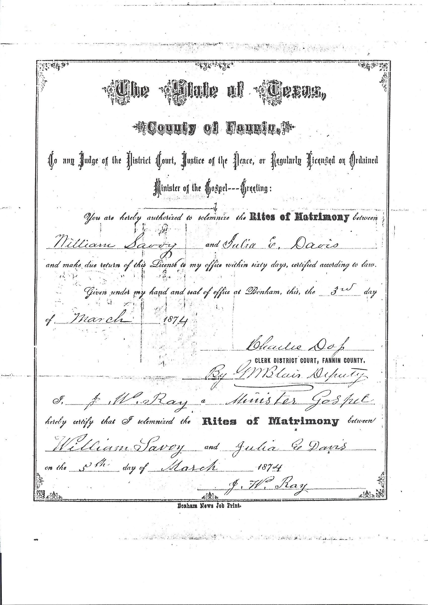

In the fall of 1872, a Mississippi-born adventurer named William Louis Marshall Savoy stood in a field of North Texas prairie and made a deal that would outlast his own memory. He was offering the Transcontinental Railroad something no railroad could refuse: land, for free. Forty acres, twenty on each side of the track, in exchange for one condition — that the new town rising alongside the rails be called Savoy.
The deed was filed in Bonham on October 29, 1872.
Col. Savoy was no simple farmer. His life read like a dime novel. Born in Mississippi in 1817 or 1818 — the sources disagree — his father had fled France after Napoleon's defeat at Waterloo and settled in the Mississippi Territory. William grew up on a plantation, having been adopted by a planter after his mother died in a wagon accident. He and his sister had run away by raft down the Mississippi when he was ten years old. By his twenties he was a government surveyor. By 1849 he had joined the California Gold Rush and found enough to bring nuggets home. During the Civil War he served the Confederate Intelligence Department as a spy. In the years after Appomattox he crossed the Atlantic twice and the Pacific three times, tried his luck in South America, and survived both a yellow fever epidemic and a cholera outbreak that killed every other man on his ship.
He arrived in Fannin County around 1870, and by 1872 he had made his deal.
Col. Savoy did not only give the railroad its acreage. He donated the lot on which the Methodist Episcopal Church was built on Fowler Street. He sold town lots for $150 to $250 — reasonable prices for a new town on a new railroad. He married Julia E. Davis on March 5, 1874, in a ceremony performed by minister J.H. Ray, and the marriage certificate survives in this archive.

His death, like his birth, sits in a tangle of conflicting dates. Mattie Lee Boyd's 1939 thesis — the most authoritative history of the town's founding era — places it at August 7, 1880, at Johnson City, Texas. The family memoir Before I Remember, narrated by his daughter, gives the date as 1889 in Goshee, Johnson County. Either way, he had seen his town built. By 1880 Savoy had a population of around four hundred, six dry goods houses, a college, a Methodist church, a newspaper, and a post office. It bore his name.

"He was born in Mississippi in 1818 and came to Texas as a young man." — Mattie Lee Boyd, History of Savoy Male and Female College, 1939
The town has survived everything thrown at it — tornado, fire, the slow erosion of rural life in the twentieth century — and it still carries his name. In 2005, Nancy Savoy, the widow of the last surviving grandson of the Colonel, donated $25,000 to Savoy ISD to restore the 1878 Methodist Church bell and fund an annual scholarship — a gift made to preserve her husband's family legacy in the town the Colonel had founded more than a century before. The bell was restored, and the town still bears his name.
All Tales